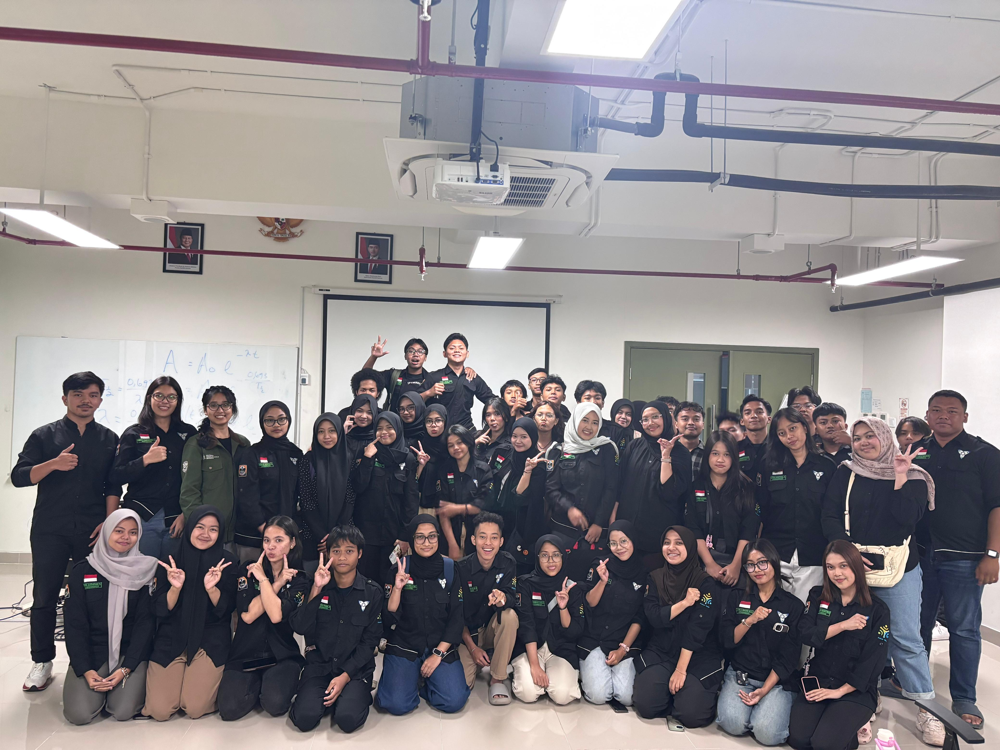

Himpunan Mahasiswa Teknokimia Nuklir
Kabinet Nexus - Beyond Chemistry Into Energy
Tentang Kami
Bukan organisasi formalitas. Ruang untuk benar-benar paham apa yang kami pelajari.
Simbol Kabinet Nexus memiliki makna mengikat dan menyatukan. Menjadi wadah pergerakan progresif untuk membangun ekosistem mahasiswa yang adaptif terhadap masa depan.
- Akademik
Belajar bersama, bukan sendiri-sendiri
Membantu mahasiswa Teknokimia Nuklir melewati kesulitan mata kuliah inti melalui kerja sama yang solid.
- Riset
Dari rasa ingin tahu ke publikasi
Wadah kolaborasi riset mahasiswa, publikasi, dan pendampingan menuju inovasi nasional.
- Komunitas
Satu ikatan yang saling kenal
Dari mentoring mahasiswa baru sampai kolaborasi antarangkatan, tidak ada yang berjalan sendirian.
Program Kerja
Inisiatif dan agenda strategis HIMATKN
Publikasi Terkini
Kabar dan dokumentasi kami
Susunan Kepengurusan
Tujuh simpul divisi, satu kepengurusan
Struktur HIMATKN Kabinet Nexus membagi fokus melalui Divisi Internal, Eksternal, Reaksi, Minat dan Bakat, Keuangan, Minfo, dan Sosmas.
Struktur diperbarui tiap pergantian periode kepengurusan.
Selengkapnya →